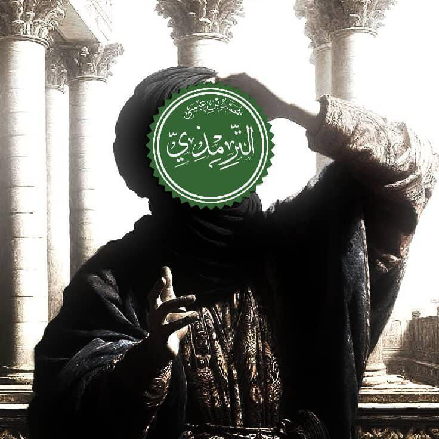
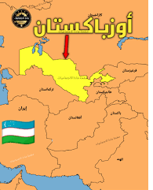

الانطلاق من ترمذ
بدأ رحلته العلمية من مسقط رأسه ترمذ، حيث تلقى العلم الأولي وحفظ الحديث.

رحلة عالمٍ عاش للحديث، سخّر حياته لخدمة سنة النبي ﷺ، فجمع الأحاديث، وبيّن درجتها، وربطها بالفقه والعمل
تعرّف على الإمام الترمذي: أصله، موطنه، ونشأته العلمية
هو أبو عيسى محمد بن عيسى بن سورة الترمذي، من أعلام الإسلام الكبار وإمام من أئمة الحديث النبوي الشريف.
أصله فارسي، من بلاد ما وراء النهر، ونُسب إلى مدينة ترمذ التي تقع في أوزبكستان حالياً.
وُلد سنة 209 هـ في مدينة ترمذ، ونشأ في بيئة علمية محبة للعلم والحديث النبوي الشريف.
نشأ محباً للعلم منذ صغره، فحفظ الحديث مبكراً، وتميّز بقوة الذاكرة وحسن الفهم والذكاء الحاد.
تحمّل مشاق السفر والغربة في سبيل العلم حتى صار من كبار المحدثين
بدأ رحلته العلمية من مسقط رأسه ترمذ، حيث تلقى العلم الأولي وحفظ الحديث.

ترمذرحل إلى العراق ليتتلمذ على كبار العلماء والمحدثين هناك، وكانت من أهم محطاته.
زار الأراضي المقدسة في مكة المكرمة والمدينة المنورة لطلب العلم من علمائها.
توجه إلى خراسان ليجمع الحديث من علمائها، مكملاً بذلك رحلته العلمية الشاملة.
عاد إلى ترمذ محملاً بعلم غزير، وشرع في تأليف كتبه العظيمة ونشر العلم.
من تعلّم منهم ومن تعلّم على يديه
كان لقاؤه به حدثاً مفصلياً في حياته، وتأثر بمنهجه في نقد الأحاديث
صاحب صحيح مسلم، أحد أئمة الحديث الكبار
صاحب سنن أبي داود، من أعلام المحدثين
إمام أهل السنة وصاحب المسند الشهير
من كبار تلاميذه ورواة كتبه
من العلماء الذين نقلوا علمه للأجيال
من حملة علمه وناشري مؤلفاته
إحصائيات عن كتابه الجامع وأبوابه
«لا وضوء إلا من صوت أو ريح» حديث حسن صحيح
«صلاة الجماعة تفضل على صلاة الرجل وحده بسبع وعشرين درجة» حديث حسن صحيح
«إذا أديت زكاة مالك فقد قضيت ما عليك» حديث حسن غريب
«من صام رمضان إيماناً واحتساباً غفر له ما تقدم من ذنبه» حديث حسن صحيح
«أي الحج أفضل؟ قال: العج والثج» حديث حسن
«التاجر الصدوق الأمين مع النبيين والصديقين والشهداء» حديث حسن
«رباط يوم في سبيل الله خير من الدنيا وما عليها» حديث صحيح
«إن من أحبكم إليّ أحسنكم أخلاقاً» حديث صحيح
«من أبر؟ قال: أمك، ثم أمك، ثم أمك، ثم أباك» حديث حسن
«يكون من بعدي اثنا عشر أميراً كلهم من قريش» حديث حسن صحيح
«من قال في القرآن بغير علم فليتبوأ مقعده من النار» حديث حسن
«إذا كان يوم القيامة كنت إمام النبيين وخطيبهم» حديث حسن
«ليس شيء أكرم على الله تعالى من الدعاء» حديث حسن غريب
أهم الكتب التي ألّفها الإمام الترمذي رحمه الله
يُعدّ تأليف كتاب الجامع من أعظم محطات حياته، وهو أحد الكتب الستة المعتمدة في الحديث النبوي الشريف.
كتاب يُظهر محبته العميقة للنبي ﷺ، وهو من أكثر الكتب انتشاراً ومحبة عند المسلمين.
ما يُميّز الإمام الترمذي عن غيره من المحدثين
صنّف الحديث حسب درجته إلى صحيح وحسن وضعيف، وهو أول من أشاع مصطلح "الحديث الحسن"
ذكر علل الأحاديث الخفية التي لا يدركها إلا المتخصصون، مما يُعين على فهم درجة الحديث
ربط بين الحديث والفقه، وذكر آراء الفقهاء واختلافاتهم في كل مسألة
من أعظم الابتلاءات في حياته أنه فقد بصره في أواخر عمره، فصبر واحتسب، ولم يمنعه ذلك من التعليم ونشر العلم. بل استمر في إملاء الحديث على طلابه حتى آخر حياته، مثالاً يُحتذى في الصبر والثبات.
توفي الإمام الترمذي رحمه الله سنة 279 هـ في مدينة ترمذ، حيث وُلد ونشأ وقضى معظم حياته في خدمة الحديث النبوي الشريف
تعرّف على الإمام الترمذي وكتبه من خلال هذه الفيديوهات